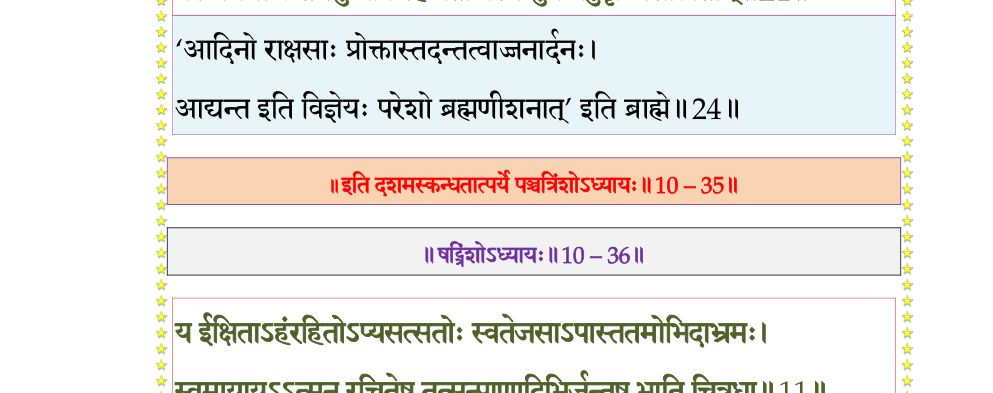

स्कन्ध 10 · अध्याय 35
श्लोक १
श्रीशुक उवाच–
केशी तु कंसप्रहितः खुरैर्महीं महाहयो निर्दरयन् मनोजवः ।
सटावधूताभ्रविमानसङ्कुलं कुर्वन् नभो ह्रेषितभीषिताखिलः।। १ ।।
केशी तु कंसप्रहितः खुरैर्महीं महाहयो निर्दरयन् मनोजवः ।
सटावधूताभ्रविमानसङ्कुलं कुर्वन् नभो ह्रेषितभीषिताखिलः।। १ ।।
श्लोक २
विशालनेत्रो विकटास्यकोटरो बृहद्गलो नीलमहाम्बुदोपमः ।
दुराशयः कंसहितं चिकीर्षुर्व्रजं स नन्दस्य जगाम कम्पयन्।। २ ।।
दुराशयः कंसहितं चिकीर्षुर्व्रजं स नन्दस्य जगाम कम्पयन्।। २ ।।
श्लोक ४
तं त्रासयन्तं भगवान् स्वगोकुलं स्वह्रेषितैर्बालविघूर्णिताम्बुदम् ।
आत्मानमाजौ मृगयन्तमग्रणीरुपाह्वयन्स व्यनदन् मृगेन्द्रवत् ।।
स तं निशम्याभिमुखो मुखेन खं पिबन्निवाभ्यद्रवदत्यमर्षणः ।
जघान पद्भ्यामरविन्दलोचनं दुरासदश्चण्डजवो दुरत्ययः।। ४ ।।
आत्मानमाजौ मृगयन्तमग्रणीरुपाह्वयन्स व्यनदन् मृगेन्द्रवत् ।।
स तं निशम्याभिमुखो मुखेन खं पिबन्निवाभ्यद्रवदत्यमर्षणः ।
जघान पद्भ्यामरविन्दलोचनं दुरासदश्चण्डजवो दुरत्ययः।। ४ ।।
श्लोक ७
तद् वञ्चयित्वा तमधोक्षजो रुषा प्रगृह्य दोर्भ्यां परिविध्य पादयोः ।
सावज्ञमुत्सृज्य धनुःशतान्तरे यथोरगं तार्क्ष्यसुतो व्यवस्थितः ।।
स लब्धसञ्ज्ञः पुनरुत्थितो मुखं व्यादाय केशी तरसाऽऽपतद् हरिम् ।
सोऽप्यस्य वक्त्रे भुजमुत्तरं स्मयन् प्रवेशयामास यथोरगं बिले।। ६
दन्ता निपेतुर्भगवद्भुजस्पृशस्ते केशिनस्तप्तमयस्पृशो यथा ।
बाहुश्च तद्देहगतो महात्मनो यथाऽऽमयः संववृधे उपेक्षितः।। ७ ।।
सावज्ञमुत्सृज्य धनुःशतान्तरे यथोरगं तार्क्ष्यसुतो व्यवस्थितः ।।
स लब्धसञ्ज्ञः पुनरुत्थितो मुखं व्यादाय केशी तरसाऽऽपतद् हरिम् ।
सोऽप्यस्य वक्त्रे भुजमुत्तरं स्मयन् प्रवेशयामास यथोरगं बिले।। ६
दन्ता निपेतुर्भगवद्भुजस्पृशस्ते केशिनस्तप्तमयस्पृशो यथा ।
बाहुश्च तद्देहगतो महात्मनो यथाऽऽमयः संववृधे उपेक्षितः।। ७ ।।
श्लोक ९
समेधमानेन स कृष्णबाहुना निरुध्यवायुश्चरणांश्च विक्षिपन् ।
प्रस्विन्नगात्रः परिवृत्तलोचनः पपात लम्बं विसृजन् क्षितौ व्यसुः।।
तद्देहतः कर्कटिकाफलोपमाद् व्यसोरपाकृष्य भुजं महाभुजः ।
अविस्मितोऽयं निहतारिरुस्रियैः प्रसूनवर्षैर्ववृषद्भिरीडितः।। ९ ।।
प्रस्विन्नगात्रः परिवृत्तलोचनः पपात लम्बं विसृजन् क्षितौ व्यसुः।।
तद्देहतः कर्कटिकाफलोपमाद् व्यसोरपाकृष्य भुजं महाभुजः ।
अविस्मितोऽयं निहतारिरुस्रियैः प्रसूनवर्षैर्ववृषद्भिरीडितः।। ९ ।।
श्लोक १०
देवर्षिरुपसङ्गम्य भागवतप्रवरो नृप ।
कृष्णमक्लिष्टकर्माणं रहसीदमभाषत।। १० ।।
कृष्णमक्लिष्टकर्माणं रहसीदमभाषत।। १० ।।
श्लोक ११
कृष्णकृष्णाप्रमेयात्मन् योगेश जगदीश्वर ।
वासुदेवाखिलावास सात्वतां प्रवर प्रभो ।। ११ ।।
वासुदेवाखिलावास सात्वतां प्रवर प्रभो ।। ११ ।।
श्लोक १२
त्वमात्मा सर्वभूतानामेको ज्योतिरिवैधसाम् ।
गूढो गुहाशयः साक्षी महापुरुष ईश्वरः।। १२ ।।
गूढो गुहाशयः साक्षी महापुरुष ईश्वरः।। १२ ।।
श्लोक १३
आत्मन्नात्माश्रयः पूर्वं मायया सृजसे गुणान् ।
तैरिदं सत्यसङ्कल्पः सृजस्यत्स्यवसीश्वरः।। १३ ।।
तैरिदं सत्यसङ्कल्पः सृजस्यत्स्यवसीश्वरः।। १३ ।।
श्लोक १४
स त्वं भूभारभूतानां दैत्यप्रमथरक्षसाम् ।
अवतीर्णो विनाशाय साधूनां रक्षणाय च।। १४ ।।
अवतीर्णो विनाशाय साधूनां रक्षणाय च।। १४ ।।
श्लोक १५
दिष्ट्या ते निहतो दैत्यो लीलयाऽयं हयाकृतिः ।
अस्य ह्रेषितसंत्रस्तास्त्यजन्त्यनिमिषा दिवम्।। १५ ।।
अस्य ह्रेषितसंत्रस्तास्त्यजन्त्यनिमिषा दिवम्।। १५ ।।
श्लोक १६
चाणूरं मुष्टिकं चैव मल्लानन्यांश्च हस्तिपान् ।
कंसं च निहतं द्रक्ष्ये परश्वोऽहनि ते विभो।। १६ ।।
कंसं च निहतं द्रक्ष्ये परश्वोऽहनि ते विभो।। १६ ।।
श्लोक १७
तस्यानु शङ्खयवनमुराणां नरकस्य च ।
पारिजातस्य हरणमिन्द्रस्य च पराजयम्।। १७ ।।
पारिजातस्य हरणमिन्द्रस्य च पराजयम्।। १७ ।।
श्लोक १८
उद्वाहं वीरकन्यानां वीर्यशुल्कादिलक्षणम् ।
नृगस्य मोक्षणं पापाद् द्वारकायां जगत्पते।। १८ ।।
नृगस्य मोक्षणं पापाद् द्वारकायां जगत्पते।। १८ ।।
श्लोक १९
स्यमन्तकस्य च मणेरादानं सह भार्यया ।
मृतपुत्रप्रदानं च ब्राह्मणस्य स्वधामतः।। १९ ।।
मृतपुत्रप्रदानं च ब्राह्मणस्य स्वधामतः।। १९ ।।
श्लोक २०
पौण्ड्रकस्य वधं पश्चात् काशिपुर्याश्च दीपनम् ।
दन्तवक्रस्य निधनं चैद्यस्य च महाक्रतौ।। २० ।।
दन्तवक्रस्य निधनं चैद्यस्य च महाक्रतौ।। २० ।।
श्लोक २१
यानि चान्यानि वीर्याणि द्वारकामावसन् भवान् ।
कर्ता द्रक्ष्याम्यहं तानि गेयानि कविभिर्भुवि।। २१ ।।
कर्ता द्रक्ष्याम्यहं तानि गेयानि कविभिर्भुवि।। २१ ।।
श्लोक २२
अथ ते कालरूपस्य क्षपयिष्णोरमुष्य वै ।
अक्षोहिणीनां निधनं द्रक्ष्याम्यर्जुनसारथेः।। २२ ।।
अक्षोहिणीनां निधनं द्रक्ष्याम्यर्जुनसारथेः।। २२ ।।
श्लोक २३
विशुद्धविज्ञानघनं स्वसंस्थया समाप्तसर्वार्थममोघवर्तिनम् ।
स्वतेजसा नित्यनिवृत्तमायागुणप्रवाहं भगवन्तमीमहि।। २३ ।।
स्वतेजसा नित्यनिवृत्तमायागुणप्रवाहं भगवन्तमीमहि।। २३ ।।
श्लोक २५
त्वामीश्वरं स्वाश्रयमात्ममायया विनिर्मिताशेषविशेषकल्पनम् ।
क्रीडार्थमाद्यन्तमनुष्यविग्रहं नतोऽस्मि धुर्यं यदुवृष्णिसात्त्वताम्।। २४
श्रीशुक उवाच–
एवं यदुपतिं कृष्णं भागवतप्रवरो मुनिः ।
प्रणिपत्याभ्यनुज्ञातो ययौ तद्दर्शनोत्सवः।। २५ ।।
क्रीडार्थमाद्यन्तमनुष्यविग्रहं नतोऽस्मि धुर्यं यदुवृष्णिसात्त्वताम्।। २४
श्रीशुक उवाच–
एवं यदुपतिं कृष्णं भागवतप्रवरो मुनिः ।
प्रणिपत्याभ्यनुज्ञातो ययौ तद्दर्शनोत्सवः।। २५ ।।
भागवततात्पर्यनिर्णय

श्लोक २६
भगवानपि गोविन्दो हत्वा केशिनमाहवे ।
पशूनपालयत् पालैः प्रीतैर्व्रजसुखावहः।। २६ ।।
पशूनपालयत् पालैः प्रीतैर्व्रजसुखावहः।। २६ ।।
श्लोक २७
एकदा ते पशून् पालाश्चारयन्तोऽद्रिसानुषु ।
चक्रुर्निलायनक्रीडां चोरपालापदेशतः।। २७ ।।
चक्रुर्निलायनक्रीडां चोरपालापदेशतः।। २७ ।।
श्लोक २८
तत्रासन् कतिचिच्चोराः पालाश्च कतिचिन्नृप ।
मेषायिताश्च तत्रैके विजह्रुरकुतोभयाः।। २८ ।।
मेषायिताश्च तत्रैके विजह्रुरकुतोभयाः।। २८ ।।
श्लोक २९
मयपुत्रो महामायो व्यामो गोपालरूपधृक् ।
मेषायितानपोवाह प्रायश्चोरायितो बहून्।। २९ ।।
मेषायितानपोवाह प्रायश्चोरायितो बहून्।। २९ ।।
श्लोक ३०
गिरिदर्यां विनिक्षिप्य नीतंनीतं महासुरः ।
शिलया पिदधे द्वारं चतुःपञ्चावशेषिताः।। ३० ।।
शिलया पिदधे द्वारं चतुःपञ्चावशेषिताः।। ३० ।।
श्लोक ३१
तस्य तत् कर्म विज्ञाय कृष्णः शरणदः सताम् ।
गोपान् नयन्तं जग्राह वृकं हरिरिवौजसा।। ३१ ।।
गोपान् नयन्तं जग्राह वृकं हरिरिवौजसा।। ३१ ।।
श्लोक ३२
स निजं रूपमास्थाय गिरीन्द्रसदृशं बली ।
इच्छन् विमोक्तुमात्मनं नाशक्नोद् ग्रहणातुरः।। ३२ ।।
इच्छन् विमोक्तुमात्मनं नाशक्नोद् ग्रहणातुरः।। ३२ ।।
श्लोक ३३
तं निगृह्याच्युतो दोर्भ्यां पातयित्वा महीतले ।
पश्यतां दिवि देवानां पशुमारममारयत्।। ३३ ।।
पश्यतां दिवि देवानां पशुमारममारयत्।। ३३ ।।
श्लोक ३४
गुहापिधानं निर्भिद्य गोपान् निस्सार्य कृच्छ्रतः ।
स्तूयमानः सुरैर्गोपैः प्रविवेश स्वगोकुलम्।। ३४ ।।
स्तूयमानः सुरैर्गोपैः प्रविवेश स्वगोकुलम्।। ३४ ।।
।। इति श्रीमद्भागवते दशमस्कन्धे पञ्चत्रिंशोऽध्यायः ।।